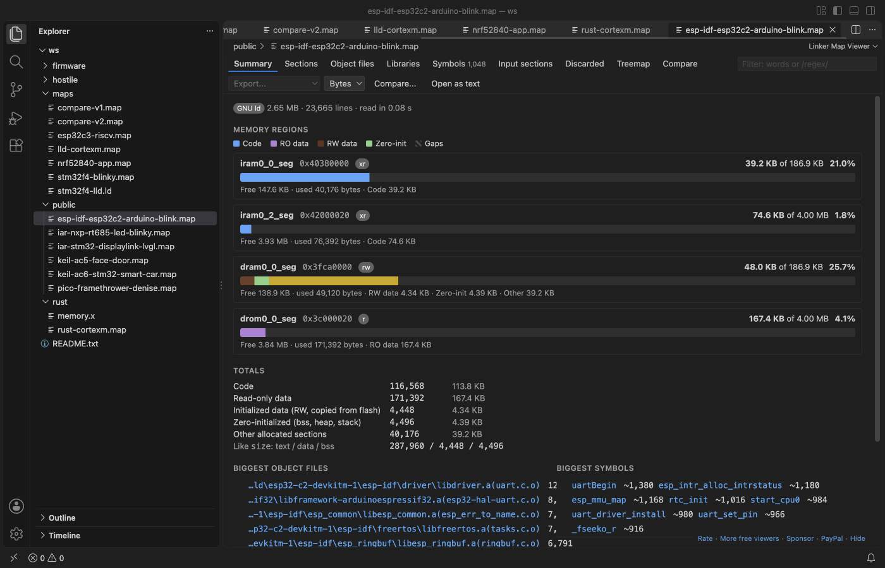

Open files in VS Code and Cursor / Binary, network and hardware
Analyze a linker map file in VS Code
A linker .map file says where every section, object file and symbol went, but it is thousands of lines of text. Install the free Linker Map Viewer by Zovo and click the .map file. You get FLASH and RAM bars per memory region (the same numbers as ld --print-memory-usage), sortable tables of sections, object files and symbols, a treemap, and a compare with an older build.
Free, MIT license. Extension ID zovo.zovo-linker-map-viewer, version 0.2.0. Needs VS Code 1.90.0 or newer.

Steps in VS Code
- Install Linker Map Viewer from the Marketplace, or press Ctrl+P (Cmd+P on macOS) and run
ext install zovo.zovo-linker-map-viewer. - Make your linker write a map: add
-Wl,-Map=firmware.map,--crefto the GCC or clang link line. ESP-IDF, Zephyr, the Pico SDK and PlatformIO already write one into the build folder. - Click the .map file in the Explorer. The summary shows each memory region with a used and total bar.
- Open the object file or symbol table, sort by size and filter with words or a
/regex/. Double-click a row to open its source file. - Click "Compare..." and pick the map of an older build to see what grew, biggest first. Export the result as CSV or Markdown for a pull request.
Steps in Cursor, Windsurf or VSCodium
- Open the Extensions view with Ctrl+Shift+X (Cmd+Shift+X on macOS).
- Search for
zovo.zovo-linker-map-viewerand click Install. Cursor, Windsurf and VSCodium install from Open VSX, where it is published aszovo/zovo-linker-map-viewer. - If your editor has no gallery, download the .vsix from the Open VSX page and run "Extensions: Install from VSIX...".
- Then use it the same way as in VS Code.
What Linker Map Viewer handles
- GNU ld (gcc, arm-none-eabi-gcc, ESP-IDF, Zephyr, STM32CubeIDE, avr-gcc, RISC-V), LLVM lld (clang, Rust embedded), IAR ILINK 7.x and 8.x, and Arm Compiler armlink 5 and 6 (Keil MDK).
- Why the linker pulled in an object file ("main.o needs uart_init"), and, with
--cref, which files use a symbol. - Large maps. In the release test a 206 MB map with 1.1 million symbols showed its full summary in 3 to 5 seconds, and the editor kept working.
- A region over its size turns red. Sizes in bytes, KB or hex.
What it does not do
- GNU ld maps list global symbols without sizes. A size marked
~runs to the next symbol and is exact only with-ffunction-sections -fdata-sections. - Static symbols are not in GNU ld maps, so the viewer cannot list them.
- lld and Rust maps have no memory regions. The viewer reads them from
memory.xor a linker script next to the map, or from a setting. - It reads the map file only, not the ELF file or its debug info.
In JetBrains IDEs (IntelliJ IDEA, PyCharm, WebStorm, CLion and others)
- Romsight: Linker Map Analyzer. Zovo has no JetBrains plugin for map files. Romsight (35 downloads) says: "See where your firmware's flash and RAM go, from the linker .map, right in CLion." It reads GNU ld and LLVM lld maps.
Other options
- GNU Linker Map files (
trond-snekvik.gnu-mapfiles, 465,256 installs, not on Open VSX). Its own description: "Syntax highlighting and symbol listing for GNU linker .map files". Not on Open VSX. - GCC Map View (
RobDerr.gcc-map-view, 2,644 installs, not on Open VSX). Its own description: "Visualize GCC linker map files (.map) and linker scripts (.ld) with a graphical memory map". Not on Open VSX. - Linker Map Auditor (
ReadyStack.linker-map-auditor, 24 installs, on Open VSX). Its own description: "Read a GNU ld .map file and see exactly which object file is eating your FLASH and RAM, and by how many bytes." - size and nm.
arm-none-eabi-size firmware.elfprints the text, data and bss totals, andarm-none-eabi-nm --size-sort -S firmware.elflists symbols by size. They read the ELF file, not the map.
Install counts and Open VSX status were checked on 9 November 2026. Descriptions in quotes are the extensions' own.
Questions
How do I make GCC write a map file?
Add -Wl,-Map=firmware.map to the link step, plus ,--cref for the "used by" list. In CMake: target_link_options(app PRIVATE -Wl,-Map=firmware.map). For Rust: RUSTFLAGS="-C link-arg=-Map=firmware.map".
Do the numbers match the memory usage that ld prints?
Yes. On the test maps the region totals equal the output of ld --print-memory-usage. One difference: with .data : AT(addr) placement, ld leaves the load copy of .data out of FLASH, and the viewer counts it.
Will a .js.map source map open in it?
No. The viewer looks at the first lines of the file. Source maps stay JSON text files.
More about Linker Map Viewer
Read the Linker Map Viewer page for every feature and setting, or the source code on GitHub.
Related guides
- Use a hex editor in VS Code
- Open a binary file in VS Code
- Open a PCAP file in VS Code
- View VCD waveforms in VS Code
Support this work
If this extension saves you time, you can support the work on GitHub Sponsors. Monthly tiers start at $5, and one-time tiers start at $15. Sponsorship is optional, and the tool works the same without it.
Need your format supported?
Open a format request with a sample file, and I reply there whether it can be done. For USD 299 once, through this GitHub Sponsors tier, I add your file format or a missing feature to this extension, with tests, within 7 days.